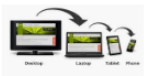
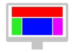
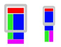

DEFINICIÓN: La definición de wikipedia de diseño responsive: “...una aproximación al diseño web que permite que nuestras página web se vean correctamente en una variedad de dispositivos y de tamaño de pantalla...adaptando el layout al entorno de visualización…

¿Cómo se crea un diseño adaptativo? Se hace utilizando CSS + ETIQUETAS HTML + incluyendo MEDIA QUERIES en el (CSS3) Si las páginas no incluyen diseño responsive, éstas no aparecen en los primeros resultados de google ( demoted), leer el siguiente enlace para más información (SEO: search engine optimization)

¿Se usa actualmente? Sí, se usa en muchas de las páginas actuales en las que al modificar el tamaño de la página no se producen descuadres, scroll horizontal, etc. Por ejemplo: